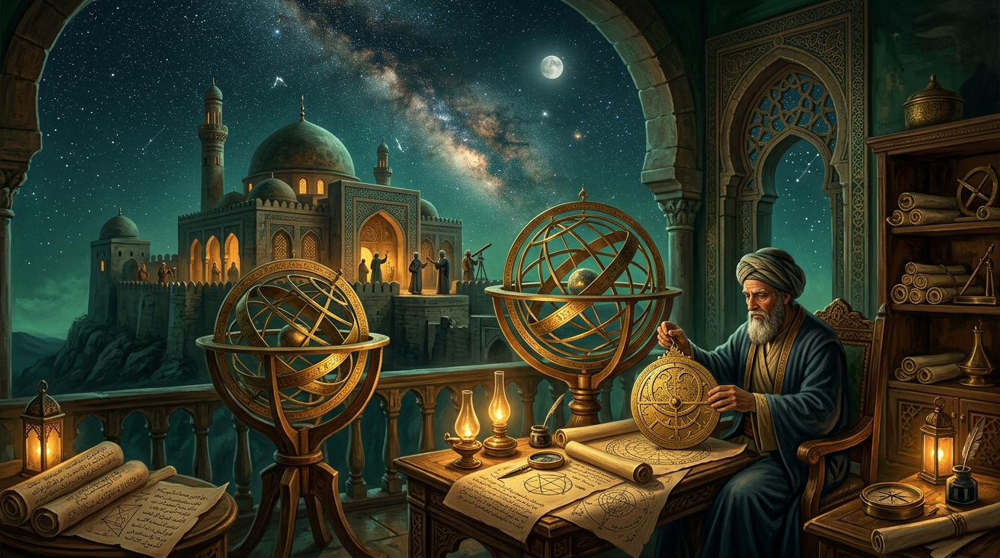

Philosophie islamique
Découvrir les questions d’existence, d’essence, de causalité, de logique, d’âme et de métaphysique développées par les philosophes musulmans.
💡 Les trois principes fondamentaux du parcours
Examiner l’existence et l’essence
La distinction fondamentale avicennienne entre l'être nécessaire par soi (Wājib al-Wujūd) et les êtres contingents éclaire la métaphysique classique.
Comprendre la place centrale de la logique
La logique (mantiq) est conçue comme l'instrument indispensable garantissant la rectitude de toute déduction philosophique.
Étudier les rapports entre philosophie et sagesse
L'exercice philosophique culmine dans la perfection intellectuelle et l'assimilation des vertus spirituelles.
🏛️ Notions essentielles & repères intellectuels
Les concepts fondamentaux développés par les penseurs de ce domaine :
Wājib al-Wujūd (L'Être Nécessaire)
Le principe suprême dont l'existence découle nécessairement de sa propre essence.
Al-Māhiyya (La Quiddité)
Ce par quoi une chose est ce qu'elle est, distincte de son existence concrète.
Al-'Aql al-Fa''āl (L'Intellect Agent)
Le principe d'émanation intelligible permettant à l'intellect humain de passer de la puissance à l'acte.
📚 Études et articles de référence

Les grands courants de la philosophie islamique
De l'école mashshā'ī (péripatéticienne) à l'école de l'illumination (ishrāq) : un panorama synthétique.
Lire l’étude →
Citations majeures des philosophes musulmans
Pensées choisies d'Al-Farabi, d'Ibn Sina et d'Ibn Rushd sur la métaphysique et la pensée.
Lire l’étude →👥 Figures intellectuelles associées
Al-Fārābī (Le Second Maître)
Pionnier de la Logique & Philosophie PolitiqueAuteur des Idées des habitants de la Cité vertueuse, il a organisé le corpus logique et conçu la philosophie politique islamique.
Ibn Sīnā (Avicenne)
Maître de la Métaphysique de l'ÊtreSon œuvre monumentale Al-Shifā' a dominé l'histoire de la philosophie orientale et occidentale durant des siècles.
Ibn Rushd (Averroès)
Le Défenseur de la DémonstrationCommentateur rigoureux d'Aristote, il a réfuté les attaques contre la philosophie dans son célèbre Tahāfut al-Tahāfut.